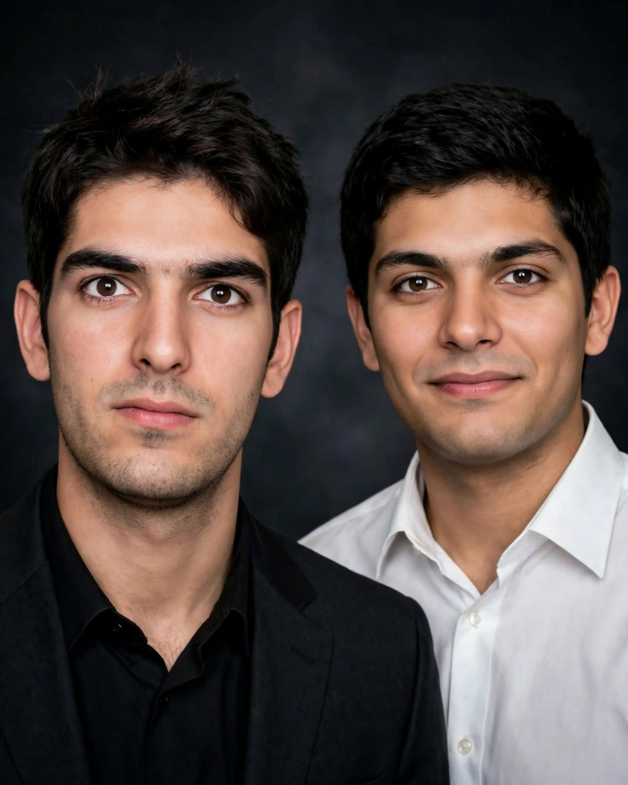

زمان سپریشده از آخرین گزارش درباره سرنوشت دو برادر
۰
روز
۰
ساعت
۰
دقیقه
۰
ثانیه
مهدی و مصطفی رودباریان | ماهشهر | ۲۶ آبان ۱۳۹۸
مهدی و مصطفی رودباریان
نامهامهدی و مصطفی رودباریان
سن مهدی۲۱ سال
سن مصطفی۳۴ سال
محل رویدادماهشهر
تاریخ آخرین گزارش۲۶ آبان ۱۳۹۸
وضعیتسرنوشت نامعلوم؛ پیکرها تحویل خانواده نشد
روایت جانباختن
بر اساس روایت ثبتشده در نسخه پیشین این صفحه، مهدی رودباریان و برادرش مصطفی در ۲۶ آبان ۱۳۹۸ در میان معترضان ماهشهر حضور داشتند.
بنا بر این روایت، یکی از معترضان با شلیک نیروهای امنیتی زخمی شد و مصطفی برای کمک به او رفت؛ اما گلولهای به سینه مصطفی اصابت کرد. مهدی نیز به سوی برادرش دوید و هدف گلوله قرار گرفت.
در ادامه روایت آمده است که نیروهای امنیتی هر دو برادر را به یک خودروی باری منتقل کردند و با خود بردند. با وجود گزارش شاهدان از شدت جراحات، پیکرهای آنان به خانواده تحویل داده نشد و خانواده از سرنوشتشان بیخبر ماند.
چون منبع اولیه این روایت در فایل پیشین مشخص نشده، جزئیات بالا بهعنوان روایت ثبتشده نقل میشوند و نه اطلاعاتی که در این صفحه مستقلاً راستیآزمایی شده باشند.
منبع: روایت ثبتشده در نسخه پیشین صفحه؛ منبع اولیه در فایل موجود مشخص نشده است.